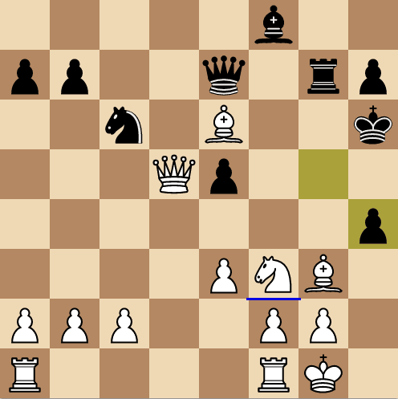

In today's modern age, many people turn to chess engines, such as Stockfish, to learn chess theory.
One issue with this is that the engines do not explain chess theory, rather they just give the best move.
This means many people get discouraged from learning chess because of the engine's inability to explain its moves, as well as, human chess coaches being very expensive.
The solution to this is the center of this project, which is to make a learning tool that attempts to teach chess by interpreting engine moves in a human way.
This app will make use of Java GUI. It will contain features like FEN entry to study custom positions, as well as, an opening explorer that will have many of the most popular openings and their theory.
This app will have a friendly way of giving written explanations of theory and feedback on good and bad moves.
A future feature would allow you to explore lines even after a mistake or alternative move. This will be challenging, because those lines will not be in the database.
Proposal last updated March 28, 2023.